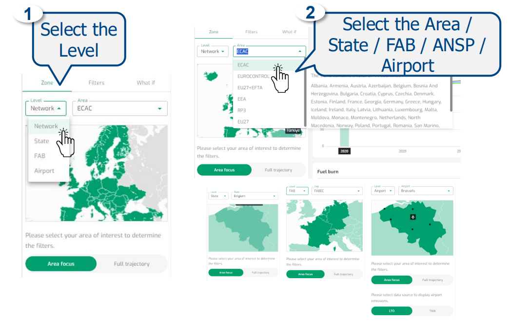
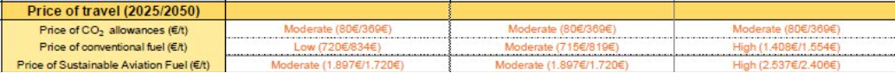

5 NetZero
5.1 Functionalities

Based on EUROCONTROL data and traffic forecasts, get an estimate of future trip fuel burn and emissions towards 2050 in different operational views and with traffic filtering options. Explore what-if scenarios to inform sustainable strategic decisions. Leverage on what-if scenario tools, exploring how Sustainable Aviation Fuel (SAF) volumes, technological and operational improvements can impact emission reduction potential. See an indication of additional environmental costs from SAF and market-based measures.
Project Data
Save/Retrieve/Delete Project
Emissions estimate
- Select the Area and Level of interest
- View the Emissions (totals, average and reference)
- View the Fuel Burn and Flights number
- View the Cumulative Emissions
- View the KPIs or results per category
- View the Environmental Costs
- Select the Flight criteria Filters
- Select the Aviation Outlook Scenario
- Select the Area and Level of interest
What-if estimates
- Customise the SAF Blend
- Customise the Fleet, Air Traffic Management and Economic Prices
- Customise the SAF Blend
5.2 Save, Retrieve, Delete Project data
Note: You need to log in to enable project data management.
- Display the projects list
- Open the Project(s) dropdown.
- The list of available projects appears (e.g., MyFirstProject, MySecondProject, New Project).
- Create a new project and save data
- In the Project(s) dropdown, choose New Project.
- In the New Project field, enter the project name (e.g., My New Project Name).
- Review the Net Zero information shown on the page.
- Click Save to create the project and store the displayed Net Zero information.
- Update data in the current project
- Ensure the desired project is selected in Project(s) (e.g., MyFirstProject).
- Make your changes on the page.
- Click Save to update the current project with the new information.
- Retrieve project data
- Open the Project(s) dropdown.
- Select the project you want to load (e.g., MyFirstProject, MySecondProject, or My New Project Name).
- The stored data for that project will be retrieved and displayed.
- Delete a project
- Open the Project(s) dropdown and locate the project to remove.
- Click the delete (trash/bin) icon next to that project.
- In the confirmation dialog, click Confirm to permanently delete the project (or Cancel to keep it).

5.3 Select Area of interest
You can analyze results at different levels. First pick a Level, then pick the corresponding Area.
- Select the Level
- Open the Level dropdown. Choose one of:
- Network
- State
- FAB
- Airport
(After you choose a level, the Area dropdown will adapt to that level.)
- Select the Area / State / FAB / ANSP / Airport
- Open the Area dropdown.
- Pick the item that matches your chosen level:
- Network → choose a region (e.g., ECAC, EUROCONTROL, EU27+EFTA, EEA, RP3, EU27).
- State → choose a country (e.g., Belgium).
- FAB → choose a Functional Airspace Block (e.g., FABEC).
- Airport → choose an airport (e.g., Brussels).
- The map panel updates to your selection.
What to do next
Click Area focus to view metrics for the selected area (you’ll see panels such as Fuel burn and others update accordingly).
Or click Full trajectory if you want trajectory-based views (when available).
Notes & tips
“Please select your area of interest to determine the filters”, filters become available after you pick a Level + Area.
For Airport level, select a source to display airport emissions (e.g., LTO, TMA) when prompted.
Default values
Level value is Network
Area value is ECAC
State value is Belgium
FAB value is FABEC
ANSP value is Skeyes
Airport value is Brussels

Output
The Level and Area selection update the Emissions, Fuel burn, Cumulative Emissions and What-if Graphs.
Data
UN list of countries. The designations employed do not imply the expression of any opinion whatsoever on the part of EUROCONTROL concerning the legal status of any country, territory, city or area or of its authorities, or concerning the delimitation of its frontiers or boundaries. Generally, Airports with, on average, more than 10 movements per day are included.
Definition
Network: group of states State: nation or territory considered as an organized political community under one government FAB (Functional Airspace Block): an airspace block based on operational requirements and established regardless of State boundaries.

5.4 View the Emissions (totals, average and reference)

Default
values CO2 exhaust, CO2 net, SAF, Fleet Renewal, Fleet Revolution, Operation Improvements, NOx, SOx
Emissions View Total
Output
The Emissions results vary depending on the Zone selected, the Filters and the What if values. The total emissions of one year, and the reduction potential of in-sector improvements are visible at the top of the graph.

Data
Total value presents absolute total values of emissions Average values present values per flight Relative values present the yearly relative change compared to the reference year (currently 2024)
Definition
Total value presents absolute total values of emissions
Average values present values per flight
Relative values present the yearly relative change compared to the reference year (currently 2024)
5.5 View the Fuel Burn & Number of Flights
Default
Default values Fossil, SAF, e-H2 and Number of flights
Output
The Fuel Burn results vary depending on the Zone selected, the Filtersand the What if simulation. The Fuel Burn of one year is visible atthe top of the graph. The graph shows total fuel burn and averagefuel burn per flight. The H2 and electricity energy is based on thepercentage of fleet revolution chosen.

Data
Fuel burn historical values are calculated for each flight using theEUROCONTROL Advanced Emission Model (AEM) based on latestaircraft/engine fuel burn and emission models with BADA3.16.Estimated Fuel burn values towards 2050 are based on actualtrajectories of reference year (usually the last full year) and trafficgrowth rates as published by STATFOR.
5.6 View the cumulative emissions

Default
Default values CO2 exhaust and CO2 net
Output
The Cumulative Emissions results vary depending on the Zoneselected, the Filters and the What if simulation. The CumulativeEmissions of one year is visible by travelling on top of the graph.
Data
The yearly results from the main graph are added to indicate thecumulative emission results for CO2 (as CO2 remains in theatmosphere for many decades).
5.7 View the what-if results
5.8 View the Environmental Management status

Default
In the ANSP and Airport views, instead of the cost graphs an overviewis presented on the EMS status of ANSP and airports
Output
Indication of the Environmental Systems that are applied at the ANSPand different national Airports.
Data
ANSP
Several Environmental Systems may be applied at ANSP level, such as EMAS,GreenATM, ISO 14000 family, etc.
The CANSO GreenATM programme is a voluntary environmental accreditationdesigned for ANSPs to assess and enhance their environmental performance. Itoffers a structured framework with five maturity levels, evaluating areas such asgovernance, operational efficiency, infrastructure, and stakeholder engagement.
Participation in the GreenATM programme is entirely voluntary for ANSPs. Itserves as an independent, industry-endorsed accreditation of theirenvironmental efforts.
5.9 View the Environmental Costs

Default
Default values EU ETS and Total view
Output
The Environmental costs vary depending on the Zone selected andthe What if simulation. The Environmental cost are visible for 3 years:
2030, 2040 and 2050.
Data
Data to calculate additional environmental costs are synchronized withassumptions from Eurocontrol Aviation Outlook 2050 (see below).
EU ETS cost are assumed to offset the total remaining net emissions,both taking into consideration LCA values (option EU ETS), and nottaking into consideration SAF lifecycle values (the option with SAFexcluded).
Simplified CORSIA costs only appear if emission values for eligibleflights are higher than 85% of 2019 emissions and then takingCORSIA sectoral growth factors into consideration (linear progressionfrom zero towards SGF 2,6 in 2050). Only sectoral offsetmethodologies are included to avoid too high calculation complexities.
